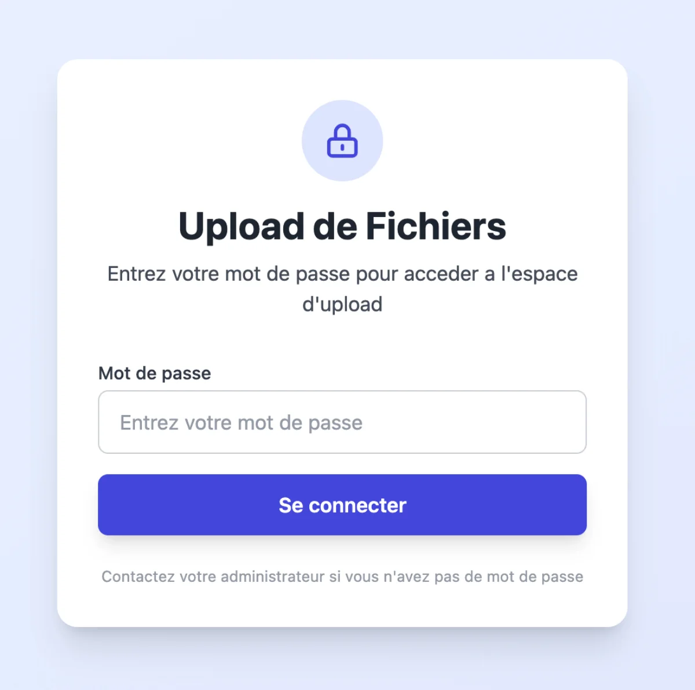
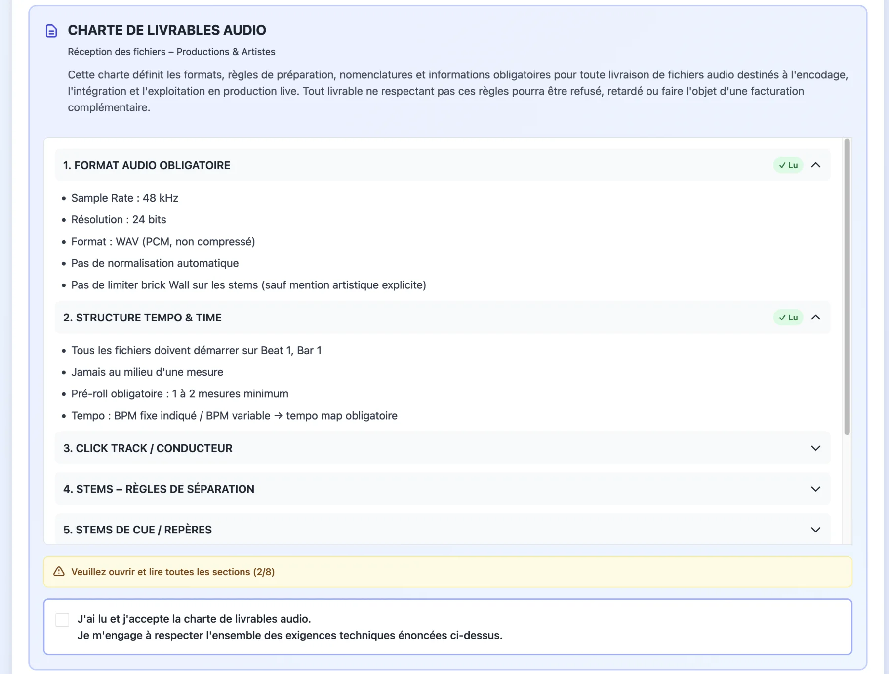
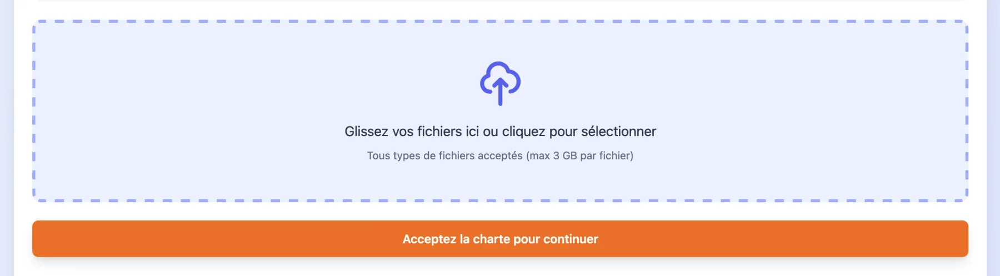
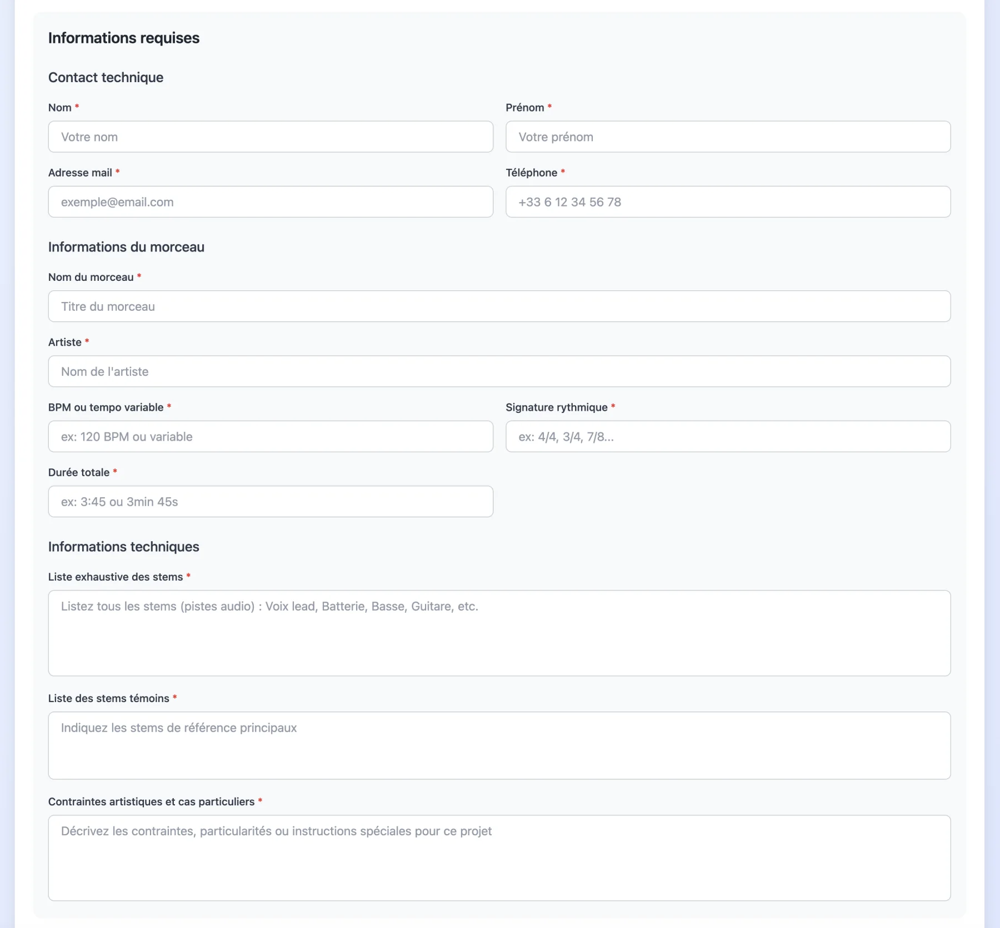
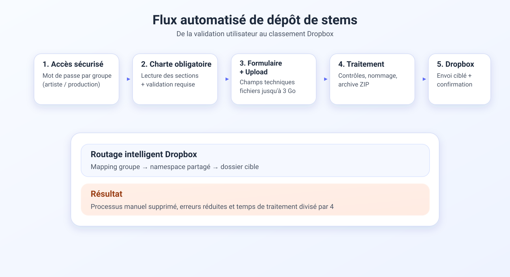
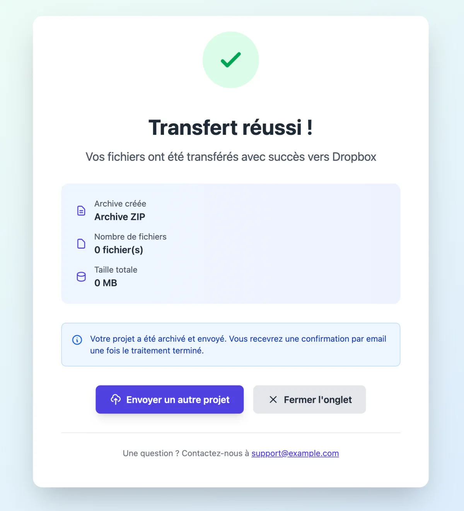

Résumé du projet
Lors de mon stage chez Playback Solutions, j’ai conçu et développé une plateforme web
permettant d’automatiser la réception, la validation et le classement de fichiers audio
(stems) volumineux vers Dropbox.
Objectif : remplacer un processus manuel long, risqué et peu structuré
par un système fiable, sécurisé et conforme à une charte technique stricte.
Le projet devait à la fois simplifier le parcours côté artistes et réduire les manipulations
manuelles côté production.

Slot visuel 02 : codage1-02-auth-password.webp
Contexte
Les artistes envoyaient leurs stems via WeTransfer. L’équipe devait ensuite :
- Consulter le mail, retrouver le lien WeTransfer, ouvrir la page, cliquer sur "Télécharger" puis attendre la fin du transfert
- Vérifier leur conformité à une charte technique
- Corriger les erreurs de nomenclature
- Classer manuellement les fichiers dans Dropbox
Chaque envoi représentait en moyenne 2 à 3 Go de données.
Ce fonctionnement posait plusieurs problèmes :
- Perte de temps sur des tâches répétitives
- Erreurs humaines au moment du tri et du classement
- Fichiers mal nommés ou incomplets
- Non-respect des exigences techniques de livraison
Intégration de la charte obligatoire
La société impose une charte de livrables audio détaillant :
- Format audio obligatoire
- Structure tempo & time
- Règles de séparation des stems
- Nomenclature stricte
- Informations obligatoires
J’ai intégré cette charte directement dans la plateforme pour déplacer une partie du contrôle qualité avant même l’upload. L’utilisateur doit :
- Ouvrir toutes les sections
- Les consulter
- Cocher une validation obligatoire
Sans cela, l’accès au formulaire d’upload est bloqué.

Slot visuel 03 : codage1-03-charte-details.webp

Slot visuel 04 : codage1-04-charte-validation.webp
Solution développée
J’ai conçu la plateforme autour d’un flux simple mais strict, avec contrôles dès l’entrée et routage automatisé vers Dropbox.
- Accès via mot de passe selon le groupe (artiste / production)
- Validation obligatoire de la charte avant d’accéder à l’upload
- Upload structuré avec champs obligatoires pour limiter les erreurs de livraison
- Attribution automatique à un dossier Dropbox spécifique selon le groupe
- Intégration via l’API Dropbox avec gestion sécurisée du token
- Token d’accès régénéré régulièrement pour éviter la perte d’accès
- Classement automatique des fichiers pour supprimer la majorité du tri manuel
Organisation du flux
- L'utilisateur valide la charte et accède au formulaire
- Le système applique les contrôles et les champs obligatoires
- Les fichiers sont envoyés dans le bon espace Dropbox selon le groupe
- Le classement final est automatisé pour éviter le tri manuel

Slot visuel 05 : codage1-05-formulaire.webp

Slot visuel 06 : codage1-06-flux.svg
Défis techniques
Gestion de fichiers volumineux (~3 Go)
Les stems dépassaient souvent 300 Mo par fichier, avec plusieurs fichiers par envoi. J’ai dû adapter la logique d’upload pour assurer :
- La stabilité des transferts sur de gros volumes
- Une gestion fiable des requêtes vers l’API Dropbox
- Un comportement suffisamment robuste pour éviter les échecs sur des envois lourds
Root Dropbox vs dossiers partagés
Un point critique : le root Dropbox diffère selon qu’on cible un dossier partagé.
Les premiers tests envoyaient les fichiers au mauvais endroit.
Pour corriger cela, j’ai dû :
- Comprendre la logique des namespaces Dropbox
- Adapter la gestion des chemins
- Corriger le mapping entre groupes et dossiers partagés
Ce point était décisif : sans cette correction, l’automatisation fonctionnait en apparence
mais rangeait les fichiers dans le mauvais espace. C’est le problème technique le plus formateur du projet.
Fiabilité & sécurité
- Token d'accès API régénéré régulièrement pour éviter les coupures d'accès
- Validation en amont pour limiter les fichiers non conformes
- Routage par groupe pour réduire les erreurs de destination
- Processus d'upload structuré pour améliorer la traçabilité

Slot visuel 07 : codage1-07-transfert-reussi.webp
Résultats
- Temps de traitement divisé par 4
- Suppression du tri manuel sur la majorité des envois
- Diminution des erreurs de nommage et de classement
- Processus plus professionnel, documenté et structuré
- Meilleure responsabilisation des artistes avant l'upload
Technologies & approche
- Stack web : HTML / CSS / JavaScript
- API Dropbox
- Gestion d’authentification par token (régénéré régulièrement)
- Validation de la charte et logique conditionnelle d’accès
- Gestion d’uploads volumineux
- Utilisation de l’IA comme assistant de développement (exploration, génération de base de code, debugging), avec adaptation et validation manuelle
Ce que ce projet démontre
- Compréhension d’un besoin métier réel
- Traduction de contraintes opérationnelles en solution technique
- Intégration d’API externe
- Gestion de gros volumes de données
- Résolution de problèmes concrets en environnement réel
Ce projet illustre ma capacité à relier exigence technique, fiabilité opérationnelle
et simplicité d'usage dans un contexte professionnel.